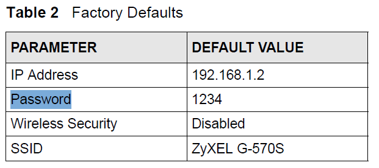
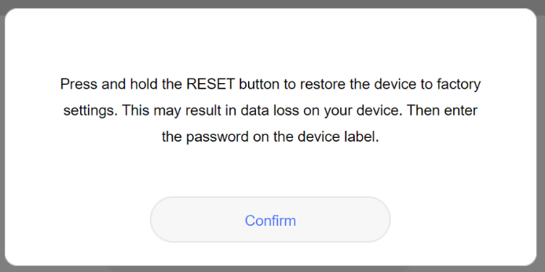

Hallo zusammen,
ich habe einen älteren Zyxel G-570S Access Point, den ich über die IP-Adresse http://192.168.8.1/ erreichen kann. Nach einem Reset des Geräts kenne ich leider das Standardpasswort nicht mehr. Der Access Point stammt ursprünglich von Telering. Sie war von Magenta gekauft. Die Kundeservice kann damit nicht helfen.
Ich habe bereits folgende Passwörter ausprobiert, leider ohne Erfolg:
Passwort: 1234
Passwort: admin
Passwort: (leer)
Hat jemand von euch vielleicht noch diesen Access Point und kann mir sagen, was das Standardpasswort ist? Oder weiß jemand, ob Telering eventuell eigene Standardpasswörter verwendet hat?
Vielen Dank im Voraus für eure Hilfe!
Hey @Markus011 ,
ich habe diese Infos gefunden:

Beachte auch die IP Adresse!
Vielleicht hilft das weiter.
LG JD.
Handbuch:
Ich denke es ist custom Firmware von Telering. 192.168.1.2 ist nicht erreichbar.
Kentwort vergessen:
Aber Acess Point sebst:
Hast du das Ganze mal auf Werkseinstellung zurück gesetzt, wie hier steht:

LG JD.
Hey ab und zu ist es einfach nur
admin
admin
Die Web UI in deinen Screenshots ist von einem Huawei Router und nicht vom ZyXel.
Bist du sicher, dass du mit dem ZyXel verbunden bist? Wenn der ZyXel an einem Huawei Router hängt wird dieser vielleicht automatisch eine andere IP Adresse bezogen haben. Wenn dies der Fall ist melde dich beim Huawei Router an (Standardpassword auf der Unterseite oder Rückseite, falls nicht geändert) und sieh nach welche IP Adresse der ZyXel hat.
Oder ändere die IP Adresse von der Netzwerkschnittstelle über welche du eine Verbindung zum ZyXel herstellen möchtest auf 192.168.1.5 mit Subnetzmaske 255.255.255.0 oder 24 und versuche es noch einmal mit der 192.168.1.2 als IP für den ZyXel.
LG NTM
Bearbeitet von NTM@NTM danke gute Punkt, 192.168.1.2 ist meine Huawei Router. Leider 192.168.1.2 geht nicht. Ich habe Angry IP Scanner benutzt aktive IPs zufinden. Und ich denke meine ZyXel gerät nicht gezeigt.
{kind=link}
{kind=link}
{kind=link}